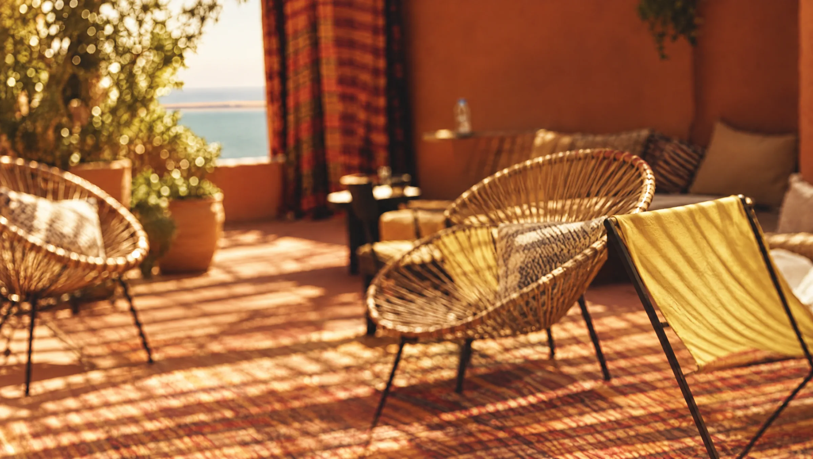
Ici, le temps ralentit.
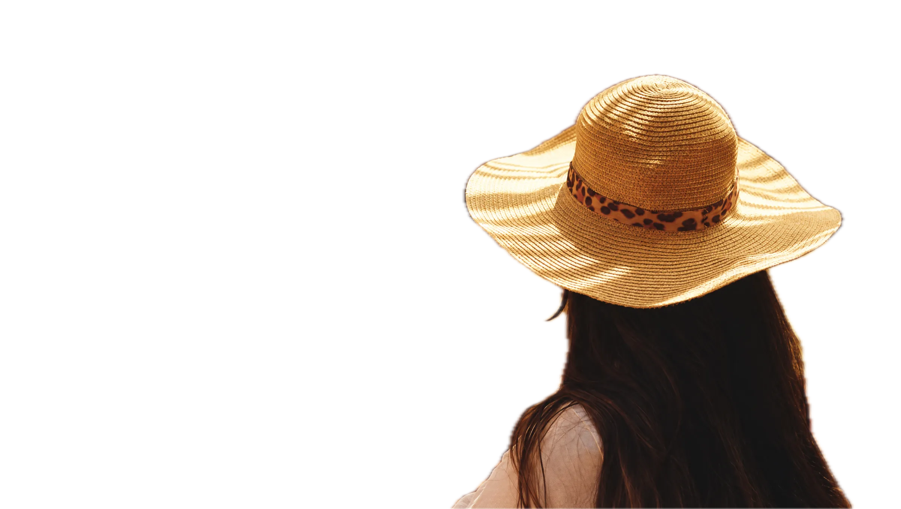
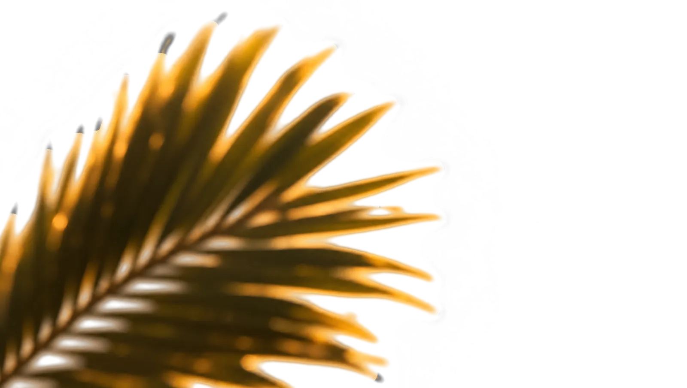
Restaurant, rooftop et night bar à Dakhla. Ce soir, le soleil se couche vers 19 h sur le lagon.
Réserver une table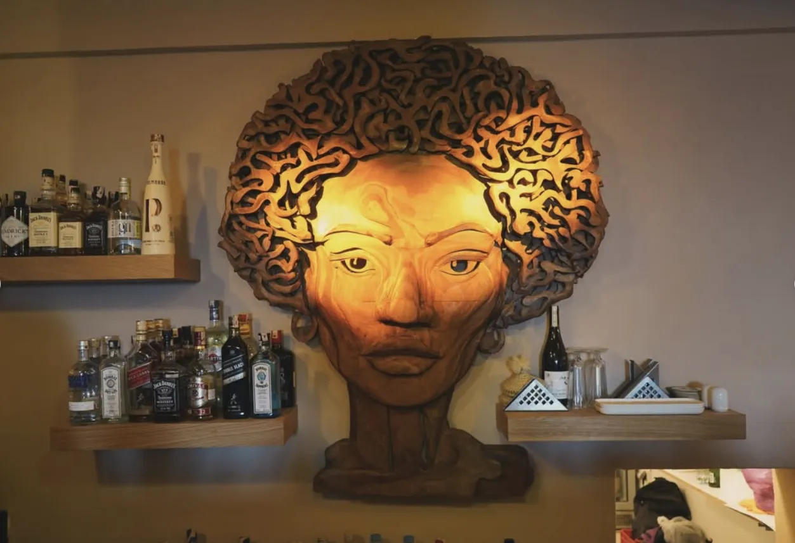
Plus qu'une terrasse.
Une maison ocre en plein centre de Dakhla. Des textiles sahraouis rayés, du zellige vert, du rotin, des lanternes. Et des visages partout : sur le logo, sur les murs, taillé dans le bois derrière le bar.
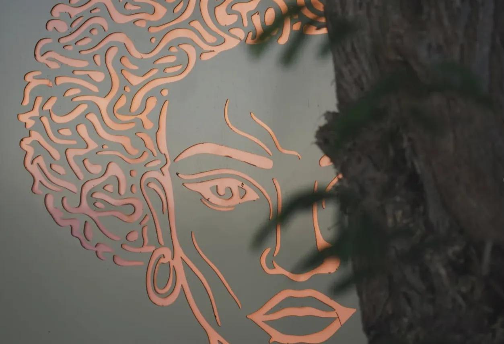
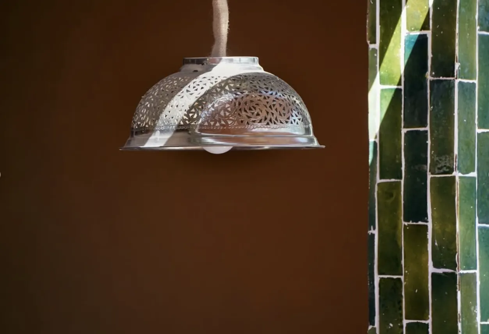
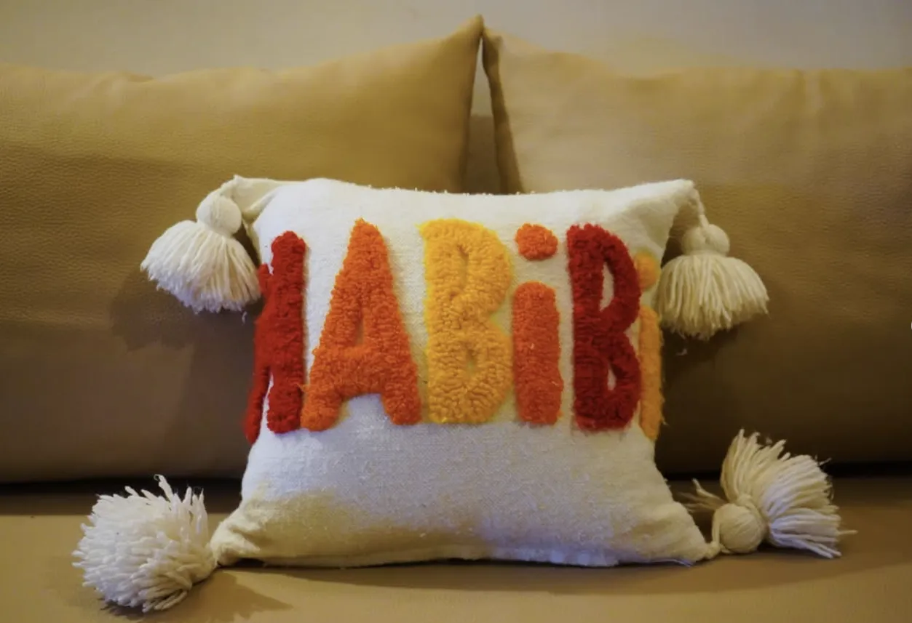
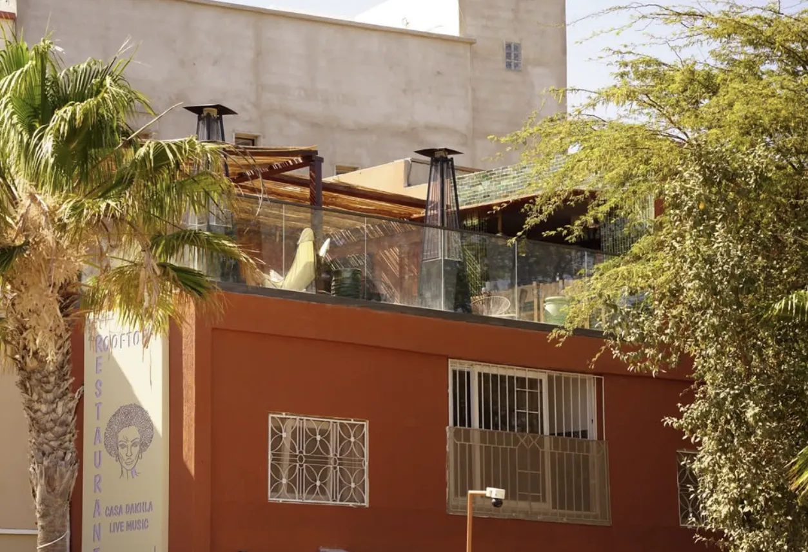
À table.
Une cuisine internationale faite pour être partagée : planches, grillades, entrées chaudes. Et des cocktails signatures pour suivre.
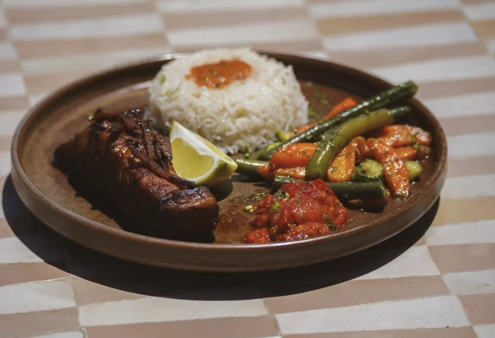
Grillades
Viande grillée, riz, légumes rôtis.
Entrées chaudes
Briouates et rouleaux croustillants, avec leurs sauces.
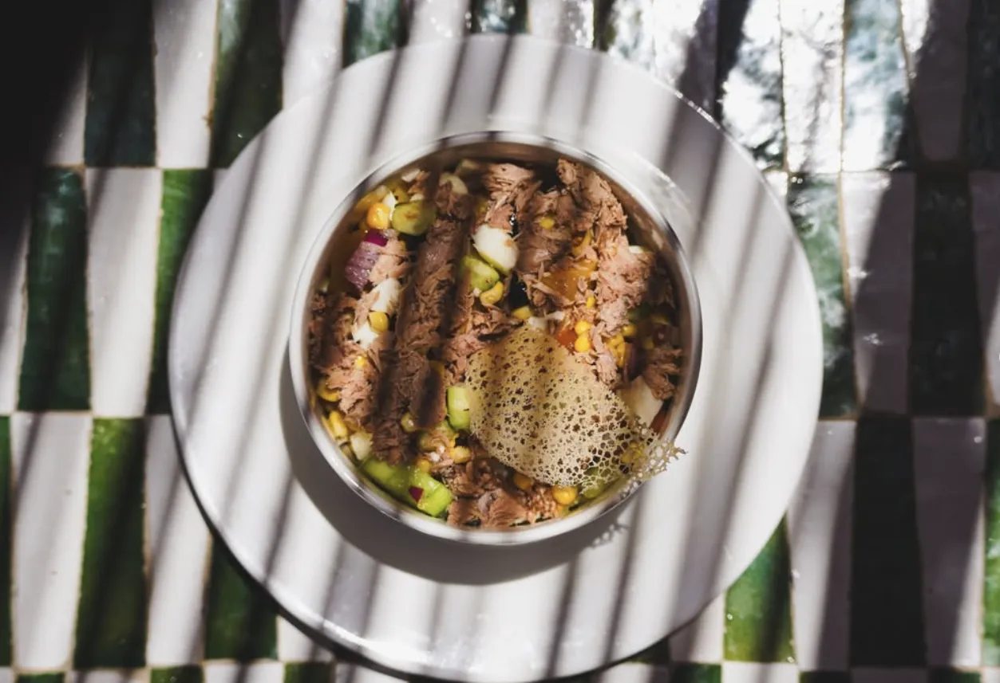
Assiettes fraîches
Servies sur le zellige, à l'ombre des stores.
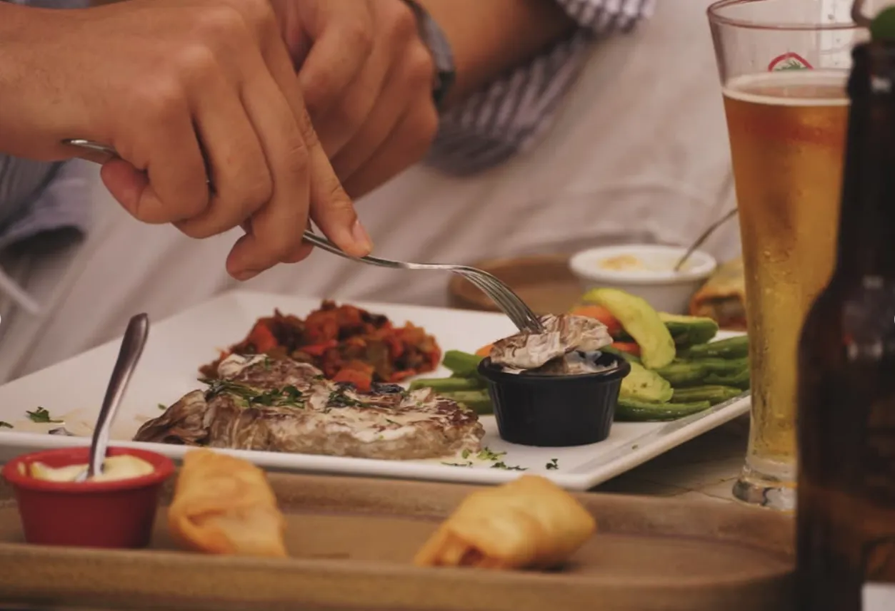
À partager
Posées au centre, chacun se sert.
Cocktails signatures
Frais, colorés, servis jusqu'à la fermeture.
La carte complète se découvre sur place. Une allergie, une question ? Écrivez-nous.
21:30. Le soleil est couché.
Le Sky Bar s'allume.
Cocktails signatures et vue sur la nuit de Dakhla, jusqu'à 2 h.
Let the music play.
Live music, sessions acoustiques et DJ sets sous l'enseigne néon. Le programme de la semaine est publié sur Instagram.
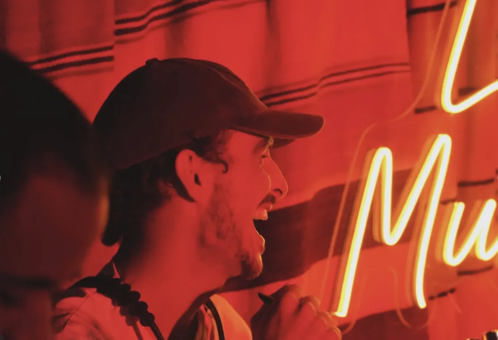
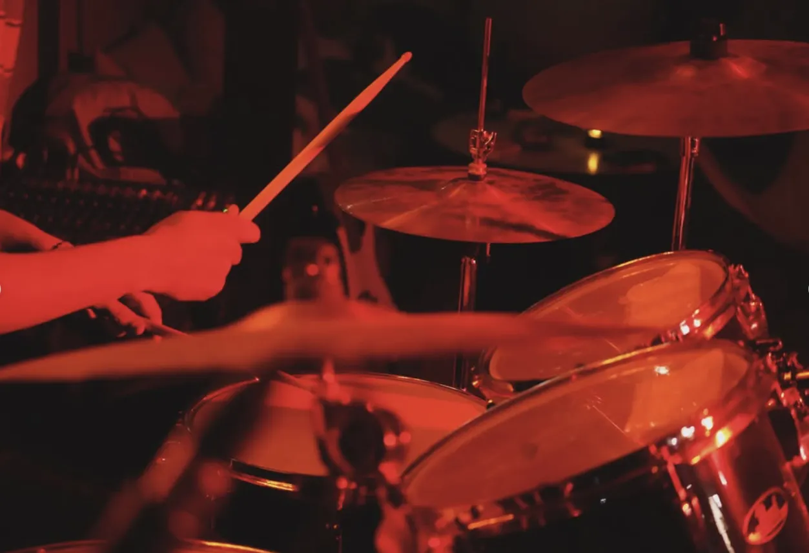
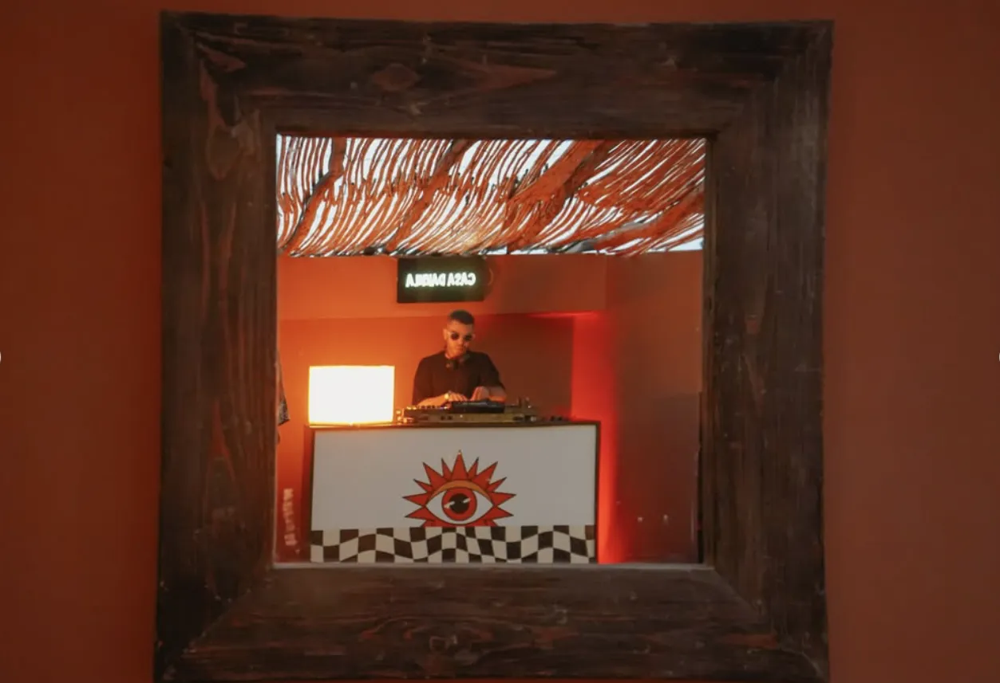
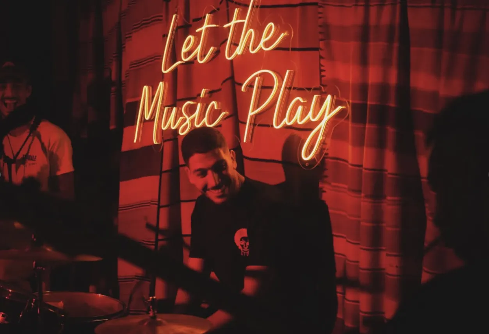
- Horaires
- Tous les soirs
18:00 à 02:00 - @alize.dakhla